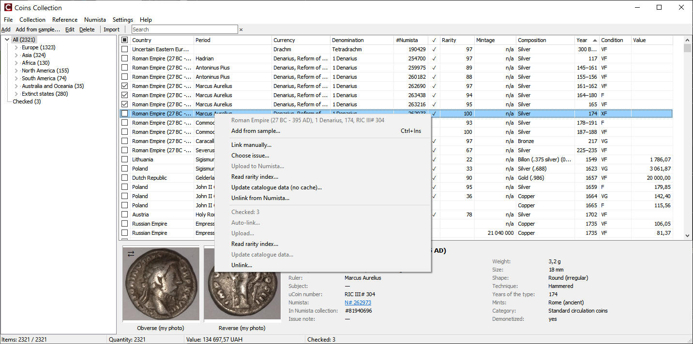
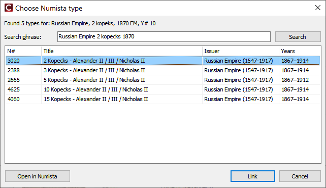
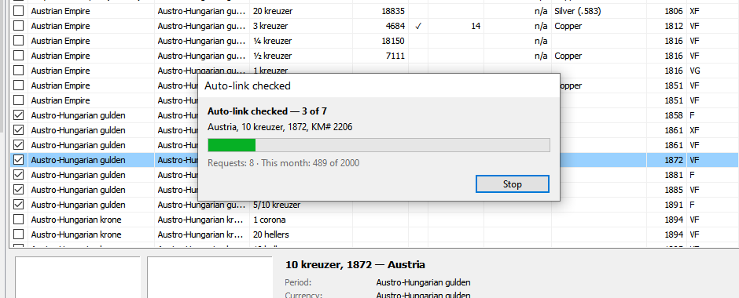

Numista: linking coins

Linking finds the Numista type (#Numista) and issue of a coin. Then the program loads the mintage, the type details and the photos.
One coin — Link manually
Right-click a coin → Link manually (or the Numista menu).
- The program searches by the catalogue number (KM#, Y#, C#), then by number and year, then by the search phrase.
- If there is one exact result, the coin is linked at once. Otherwise the type list opens.
- Choose the issue (year, mint) if it is not found automatically: Choose issue.

Search phrase
If the right type is not in the list, edit Search phrase and press Search (or Enter),
for example Ort koronny - Sigismund III Vasa 1623. The phrase you link with is saved in the coin card
(Numista search) and used next time.
Coins with a uCoin number (UC#)
uCoin exports many coins with its own number UC# … instead of KM#, Y# or C#. Numista does not know these numbers,
so such coins are searched by an automatic phrase: country + year + subject, for example
Ukraine 2020 Remembrance Day of the Fallen Defenders of Ukraine; without a subject — country + denomination + year
(Ukraine 10 hryvnias 2020). Commemorative coins of one denomination and year differ only by the subject,
so keep the Subject field filled in the coin card. Your own search phrase always wins over the automatic one.
Wrong link — unlink or link again
If a coin is linked with the wrong type, right-click it → Unlink from Numista (for checked coins — Unlink in the lower part of the menu). The type, the issue and the type photos loaded from Numista are removed; your own photos and the rarity index stay. The check box Also clear the search phrase removes the search phrase that led to the wrong type.
Or simply use Link manually again: the program asks whether to replace the link, and the photos of the old type are replaced by the photos of the new one.
If the coin is already uploaded to your Numista collection, the program asks what to do there:
- change the type and issue of the item on Numista (when you link again; the comment, price and date stay) — 1 request per item;
- delete the item from your Numista collection — it can be uploaded again later; 1 request per item;
- nothing on Numista — only the link in the program changes.
Historical states
Some coins are listed on Numista under another issuer than the uCoin country (for example Poland 1766 → Polish–Lithuanian Commonwealth). Such results always need your confirmation. When you choose one, the issuer is remembered for the coin's period, and the next coins of that period are found at once.
Many coins — Auto-link
Check coins (Checking coins) → Auto-link. The confirmation shows how the checked coins
will be searched: by the KM# / Y# / C# number, by the search phrase (UC# or no number) and how many are already linked (skipped).
Only unambiguous results are linked. A coin found by the automatic phrase is linked only if exactly one type fits
its year and country; otherwise it is counted as needs checking — link it manually.
If another coin of the same country with exactly the same number (for example KM# 6b or UC# 1)
is already linked, the coin takes its type without a search — when the coin's year is within the years of that type.
The issue and mintage are found by the coin's own year.
The check box Also load type details and photos adds 1 request per coin.

Coins of one number from different years
When you link a coin manually, the program looks for other coins of the same country with the same number that are not linked yet and whose year is within the years of the chosen type, and offers to link them too — each with the issue of its own year. Link manually for such a coin opens the type list at once with the type of the linked coin (as the coin of 1870) — without a search.
Issue
The issue is chosen by the coin's year and, if the variety is filled in, by the mint mark. Mint marks are compared without dots
and spaces, Cyrillic letters as Latin ones: EM = Е.М., SPB = С.П.Б..
If Numista has several issues for the year, the regular one is taken (not Proof, BU, a set, a pattern or a restrike).
Otherwise choose the issue yourself: Choose issue.